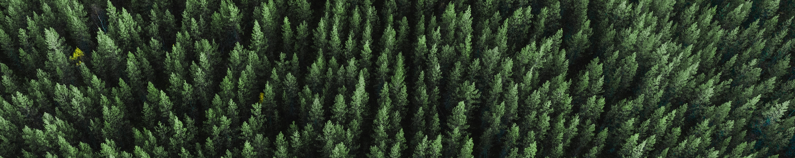

Contact
Mike Villena from the Anthropocene Institute is the current project maintainer.

Jingxian Chen, Andrew Haas, Andrew McDonald, Ben Miller, Jamie Schmidt, and Nathan Woods, alumni of Michigan State University, are the project authors.

The source code supporting this application is availaible on GitHub.